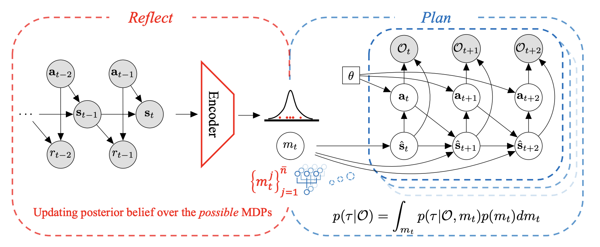
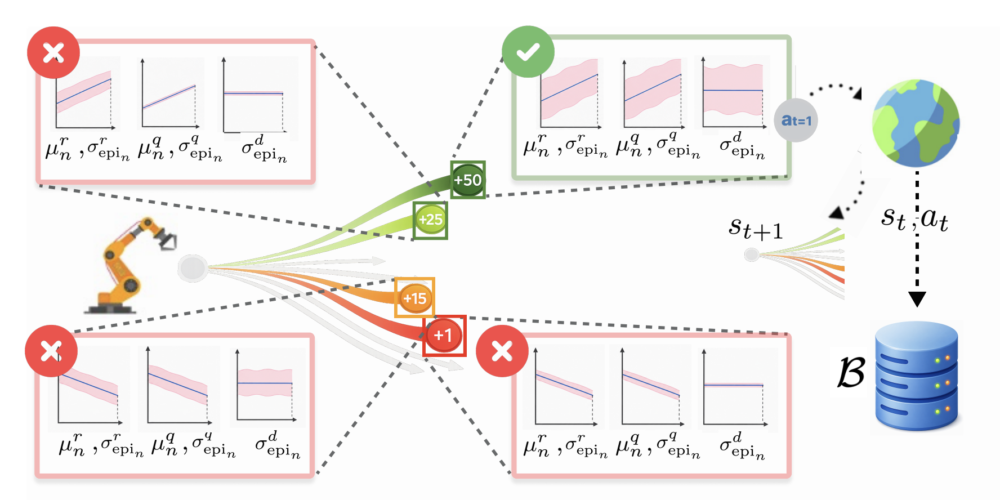
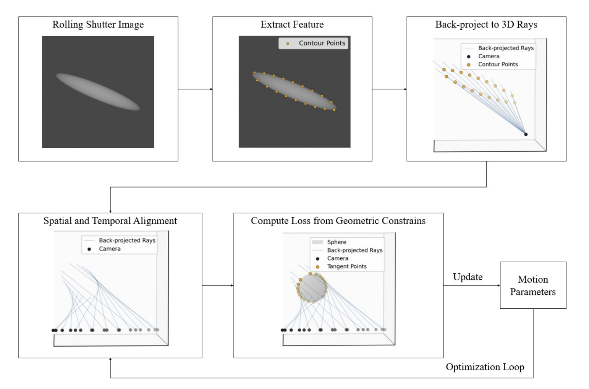
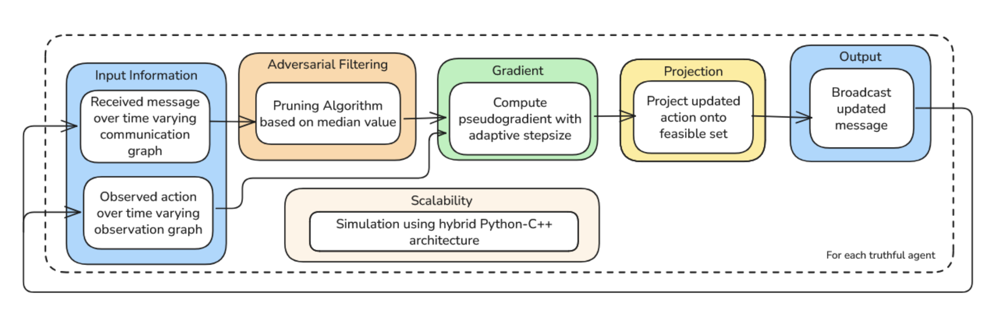
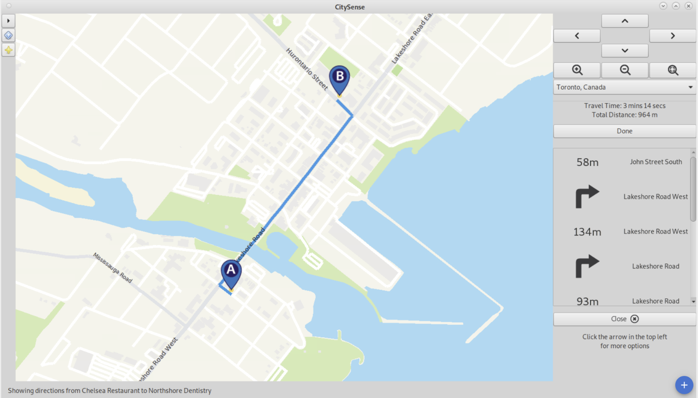

Reflect-then-Plan
A doubly Bayesian approach that updates beliefs about dynamics from observations before planning. It improved performance by approximately 12% over prior methods in the experiments reported in the résumé.
Machine learning · research & engineering
Machine Learning Researcher & Engineer
I work on reinforcement learning, world models, model-based planning, and computer vision, with a focus on decisions under uncertainty.
MSc candidate in Applied Computing University of Toronto
My research asks how learning systems can plan and act when their models or data are uncertain. I study offline and preference-based reinforcement learning, world models, and value-aware planning.
In applied ML, I have built computer vision systems for rolling-shutter motion estimation, industrial depth sensing, and image sensors. Across these settings, I care about robust evaluation and efficient implementation.
Planning under uncertainty, from offline data to real-world sensing.

A doubly Bayesian approach that updates beliefs about dynamics from observations before planning. It improved performance by approximately 12% over prior methods in the experiments reported in the résumé.

A model-based method that plans with uncertainty in rewards, dynamics, and value. The résumé reports roughly 15% higher sample efficiency and 10% higher success rate than model-free baselines, alongside a sublinear regret bound.

An optimization-based method for estimating a fast-moving sphere’s velocity and spin from camera distortion. It achieved approximately 15% lower mean absolute error than commercially available methods in the reported evaluation.
Research and industrial machine learning.
Data Driven Decision Making Lab · University of Toronto
Researching offline RL and world models for gradient-based planning. Built a 200k+ example reasoning benchmark and added seven algorithms to a shared 20+ algorithm RL codebase.
Learning, Embodied Autonomy, and Forecasting Lab · University of Toronto
Developing model-based preference learning and value-aware dynamics models for offline RL, with attention to sample efficiency and theoretical guarantees.
Seiko Epson Corporation · Toronto
Built rolling-shutter motion estimation and stereo depth models for industrial parts. A cost-volume CNN reached under 2 mm depth error; training optimizations cut runs from days to eight hours.
Jiying Technology Co. Ltd. · Remote
Combined graph neural networks and transformers for drug discovery, achieving over 95% accuracy on internal benchmarks. Improved architecture stability and tested robustness to graph noise.
Intelligent Sensory Microsystems Lab · University of Toronto
Developed mask patterns for glare reduction and contributed to a software-defined image sensor that adapts sensing speed across a scene.
Peer-reviewed work and preprints.
European Conference on Computer Vision · 2026
Paper ↗International Conference on Machine Learning · 2025
Paper ↗Under consideration at ICLR 2027
Paper ↗bioRxiv · 2024
Paper ↗IEEE Symposium on VLSI Technology and Circuits · 2024
Paper ↗Algorithms built into working systems.

Multi-agent systems · 2026
A decentralized algorithm for time-varying networks with adversarial communication. Geometric-median filtering reduced equilibrium error by over 100,000× against baselines in high-agent settings. The project earned a Certificate of Distinction at the 2026 Capstone Design Fair.

Geographic information systems · GTK+ / Glade
Built a map application covering more than a dozen cities, with display support for eight forms of color blindness. Its vehicle-routing solver combined 2-opt optimization with simulated annealing and placed 3rd among 91 teams in a pickup-and-delivery challenge.
Five years with the University of Toronto Machine Intelligence Student Team.
Project Developer
Joined UTMIST as a project developer on PhotograFirst.
Project Director
Led a team of 8–10 developers building a reinforcement learning and natural language processing framework for real-time foreign-exchange and commodity trading.
Academic Director & Lecturer in Reinforcement Learning
Conducted the first student-led reinforcement learning lecture series at the University of Toronto, introducing students to core methods from foundational concepts to policy gradients.
Academic Director & Lecturer in Reinforcement Learning
Delivered another reinforcement learning lecture series through UTMIST.
Academic Director & Lecturer in Reinforcement Learning
Organized the University of Toronto’s first reinforcement learning competition and delivered its opening address, alongside another lecture series.
University of Toronto
University of Toronto · Minor in AI · GPA 3.95/4.0
Dean’s Honour List for six consecutive semesters · University of Toronto Excellence Award (2023, 2025)
For research and engineering conversations, reach me by email or connect through the links below.
jingmin.wang@mail.utoronto.ca